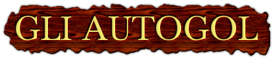

Gli Autogol sono un trio di youtuber, imitatori e conduttori radiofonici italiani, composto da:
Il trio lavora principalmente su YouTube facendo imitazioni e parodie sportive, mentre al di fuori del sito ha vari impegni in televisione, radio e teatri.